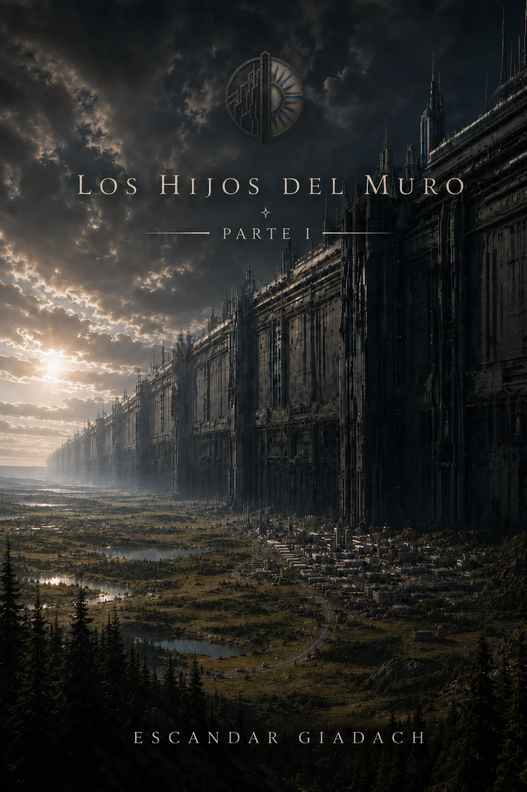
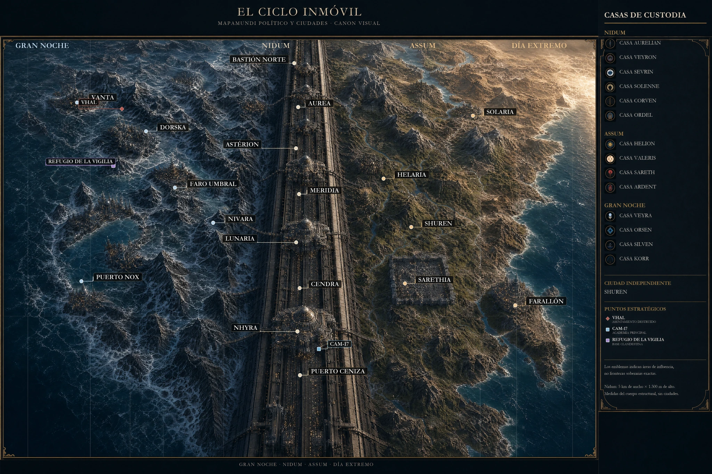

Océano cálido y abierto, evaporación intensa, tormentas y costas húmedas; los interiores son más áridos.
Parte I — La vida que le queda
Los hijos del muro
Audiolibro y archivo visual interactivo del universo de El ciclo inmóvil.

Audiolibro
Libro I
Progreso total
0%
Lista de reproducción
Partes I y II
Archivo visual
Sellos, personajes e infografías
Las piezas pueden desbloquearse según tu avance para evitar revelaciones prematuras.
Canon del mundo · actualización v8
Un océano entre la noche y el sol.
El mundo no se divide entre un desierto absoluto y una noche congelada. El océano transporta calor alrededor del planeta y sostiene una transición viva entre el Día Extremo, Assum, Nidum y la Gran Noche.

La franja marítima templada: ríos, deltas, costas fértiles y las rutas más navegables.
La megastructura canaliza los vientos y genera nieblas, contrastes térmicos y surgencias.
Mar abierto frío, hielo fracturado, polinias y un océano líquido bajo el casquete nocturno.
Una obra en expansión
Escucha la historia. Abre el mundo.
Esta web está preparada para crecer con nuevas partes, mapas, casas, personajes, infografías y material adicional sin cambiar el enlace público.